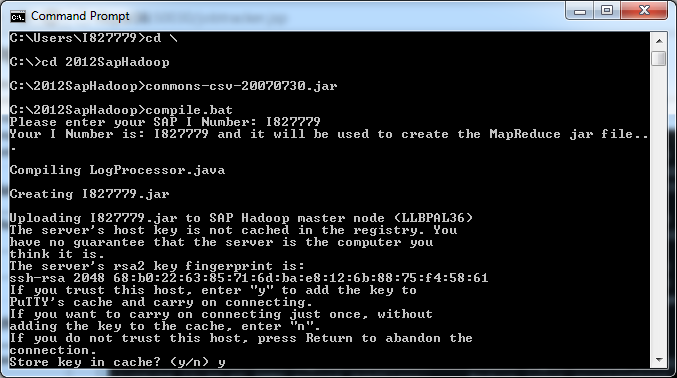
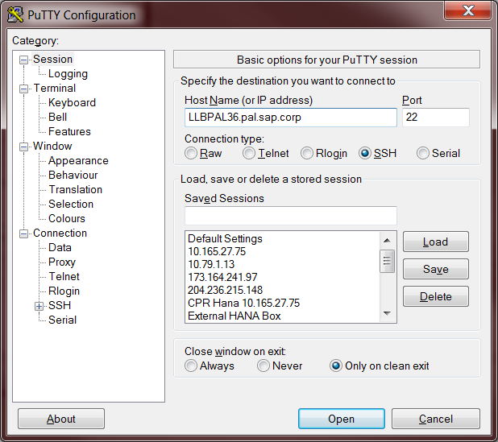
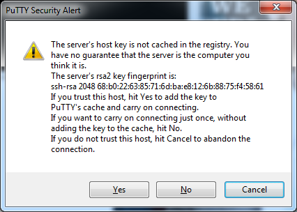
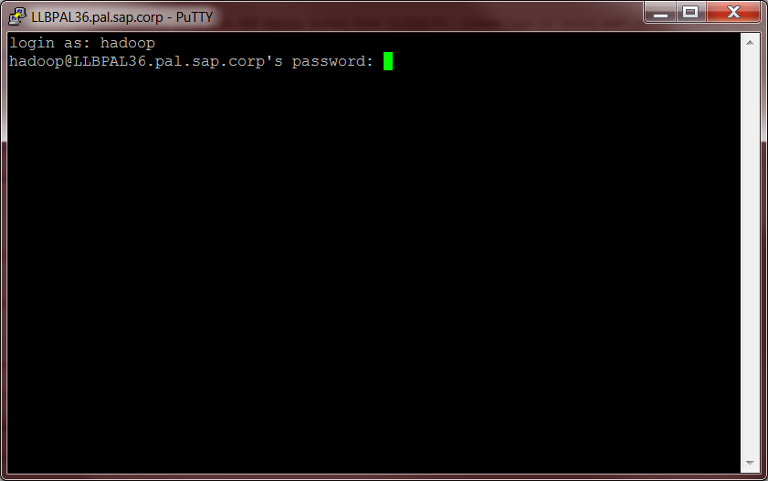
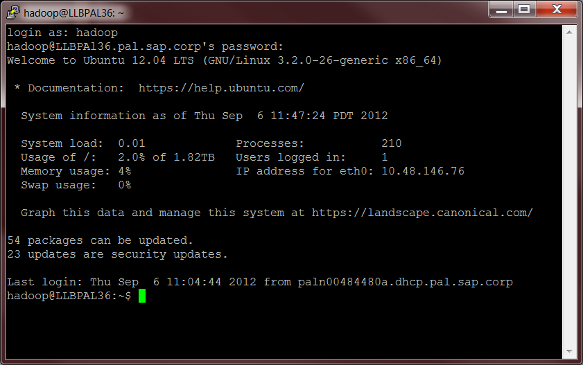

Prerequisites
- Install JDK 1.6 or higher from here, if your Windows is 64-bit, choose the jdk-...-x64.exe otherwise choose the jdk-...-i584.exe
- After installing JDK, please make sure Windows can find Java compiler and interpreter by doing the following 3 steps:
1. Select Start -> Computer -> System Properties -> Advanced system settings -> Environment Variables -> System variables -> PATH
2. Prepend C:\Program Files\Java\jdk1.7.0_06\bin; to the beginning of the PATH variable
We assume that you install jdk1.7.0_06 here.
If you wish to use other version JDK, please find the version number under C:\Program Files\Java\ and change the PATH variable accordingly.
3. Click OK three times
- Optional: Install your favorite Java IDE or you can use any text editor for modifying Java source code
- Create a base directory: c:\2012SapHadoop\
- Use "mouse right click -> save link as" to download putty.exe and pscp.exe then save them into your base directory: c:\2012SapHadoop\
- Use "mouse right click -> save link as" to download the Hadoop core library in c:\2012SapHadoop\ from here
- Use "mouse right click -> save link as" to download three jar files in c:\2012SapHadoop\ from Log4J, Apache Common Logging and Apache Common IO
- Use "mouse right click -> save link as" to download the Apache Common CSV Library in c:\2012SapHadoop\ from Apache CSV Library API
- Use "mouse right click -> save link as" to download the MapReduce java source code here into your base directory: c:\2012SapHadoop\
- Use "mouse right click -> save link as" to download the windows batch file here for compiling and uploading the jar file
- Now test if you have setup the environment correctly:
1. Open a Windows Command Prompt (it is located at: C:\Windows\System32\cmd.exe and please double click to bring it up)
1-1. Please do a quick test by typing in "javac" in the Windows Command Prompt to make sure it can find and execute the Java compile
(If you see "javac is not recognized as an internal or external command", please make sure your PATH environment variable is set correctly)
2. Change directory to your base folder: c:\2012SapHadoop\ by typing "cd c:\2012SapHadoop\" in your Windows Command Prompt
3. Now try to run the batch file by typing "compile.bat" in your Windows Command Prompt
4. The batch file will ask you to enter your SAP I-Number, please type in your I-Number and press "Enter" button on your keyboard
5. The Windows Command Prompt will start compiling the code, creating a Java jar file and uploading it to SAP Hadoop Master node
5-1. Your might see your Windows Command Prompt show this warning to you, please type "y" to confirm and proceed

6. Before it starts uploading, you will be prompted to enter a password for uploading, please type in "abcd1234"
7. You should see something like this in the Windows Command Prompt:
I827779.jar | 12 kB | 12.9 kB/s | ETA: 00:00:00 | 100%
8. Now let's run putty to SSH to SAP Hadoop Master Node (LLBPAL36), please type in "putty.exe" in the Windows Command Prompt and you should see this:

- In its "Host Name (or Ip Address)" field, please type in "LLBPAL36.pal.sap.corp" and click "Open" button
(You might see a warning from Putty like this, please click "Yes" and proceed)

- You will then see a screen like this to prompt you for the login username and password, please use:
Username: hadoop
Password: abcd1234

- Once logged in, you shall see this and that means you have completed your environment setup

- Now you can safely close the Putty window
Please contact
Dewei Sun, if there is any error opening above links.